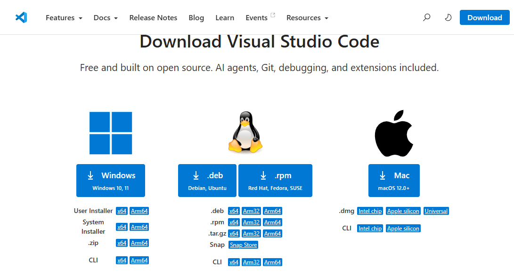

Python und Visual Studio Code installieren
In dieser Anleitung richtest du deinen Computer für den Python-Kurs ein. Am Ende sind Python, VS Code und die Python-Erweiterung installiert. In der nächsten Anleitung lernst du die Oberfläche kennen und schreibst danach deine ersten Programme.
Zeitbedarf: ungefähr 20–30 Minuten
Du benötigst: einen Computer mit Windows oder macOS und eine Internetverbindung
Das installieren wir
Für den Kurs benötigen wir drei Bestandteile:
- Python führt unsere Programme aus.
- Visual Studio Code, kurz VS Code, ist unser Programmiereditor.
- Die Python-Erweiterung für VS Code verbindet den Editor mit Python.
Für die neun Mini-Games brauchst du keine zusätzlichen Python-Pakete. Pygame Zero kommt erst später beim grafischen Spiel Achtung, Hai! zum Einsatz.
Für den anschliessenden Unterrichtsbereich KI & Snake verwenden wir Pygame. Die passende Einrichtung folgt dort auf der Seite Umgebung einrichten.
Teil 1: Python installieren

Windows
- Öffne die offizielle Seite python.org/downloads.
- Lade die aktuelle stabile Version von Python 3 für Windows herunter.
- Öffne die heruntergeladene Installationsdatei.
- Starte die empfohlene Standardinstallation.
- Warte, bis die Installation abgeschlossen ist.
Wichtig: Falls der Installer die Option Add Python to PATH anzeigt, aktiviere sie. Dadurch kann Windows Python später im Terminal finden.
macOS
- Öffne python.org/downloads.
- Lade die aktuelle stabile Version von Python 3 für macOS herunter.
- Öffne die heruntergeladene
.pkg-Datei. - Folge dem Installationsassistenten und verwende die vorgeschlagenen Einstellungen.
Installation kontrollieren
Öffne unter Windows PowerShell beziehungsweise unter macOS das Terminal.
Gib unter Windows ein:
python --version
Falls dieser Befehl nicht funktioniert, versuche:
py --version
Gib unter macOS ein:
python3 --version
Du solltest eine Ausgabe ähnlich wie diese erhalten:
Python 3.x.x
Die genauen Zahlen dürfen anders aussehen. Entscheidend ist, dass die Version mit 3 beginnt.
Teil 2: Visual Studio Code installieren

- Öffne code.visualstudio.com.
- Lade die passende Version für dein Betriebssystem herunter.
- Öffne die Installationsdatei.
- Übernimm die vorgeschlagenen Einstellungen.
- Starte Visual Studio Code.
Unter Windows sind folgende zusätzliche Optionen praktisch, falls sie angezeigt werden:
- Add to PATH
- Open with Code zum Kontextmenü hinzufügen
- VS Code als Editor für unterstützte Dateitypen registrieren
Teil 3: Python-Erweiterung installieren
- Öffne VS Code.
- Klicke links auf das Symbol Extensions mit den vier Kästchen.
- Alternativ kannst du die Tastenkombination
Ctrl+Shift+Xverwenden. Auf dem Mac ist esCmd+Shift+X. - Suche nach
Python. - Installiere die Erweiterung Python des Herausgebers Microsoft.
Die Erweiterung ergänzt unter anderem:
- farbige Darstellung von Python-Code,
- automatische Codevorschläge,
- Fehlermeldungen und Hinweise,
- Ausführen von Python-Dateien,
- Debugging zum schrittweisen Untersuchen eines Programms.
Installiere nicht wahllos mehrere Python-Erweiterungen. Für den Kurs genügt zunächst die offizielle Erweiterung von Microsoft.
Teil 4: Einen Kursordner anlegen
Speichere deine Programme nicht irgendwo zwischen Downloads und Dokumenten. Erstelle einen eigenen Kursordner.
- Erstelle in deinen Dokumenten einen Ordner namens
python-kurs. - Wähle in VS Code File → Open Folder beziehungsweise Datei → Ordner öffnen.
- Öffne den Ordner
python-kurs. - Bestätige bei einer Sicherheitsabfrage, dass du diesem selbst erstellten Ordner vertraust.
Im Explorer auf der linken Seite sollte nun der Ordner python-kurs erscheinen. Hier speicherst du deine eigenen Lösungen. Lege darin später den Unterordner mini-games für die neun Spiele an. Die Vorlagen im Kursprojekt liegen unter beispiele/mini-games; du findest ihren vollständigen Code auch auf den Lernseiten.
Optional für später: Pygame Zero installieren
Pygame Zero benötigen wir erst für das grafische Spiel Achtung, Hai! im Projektordner beispiele/Achtung_Hai. Die Installation kann gemeinsam im Unterricht erfolgen. Für die Mini-Games kannst du diesen Abschnitt überspringen.
- Öffne in VS Code über Terminal → New Terminal ein neues Terminal.
- Gib unter Windows ein:
python -m pip install pgzero
Wenn du Python über den Befehl py gestartet hast, verwende stattdessen:
py -m pip install pgzero
Unter macOS verwendest du:
python3 -m pip install pgzero
- Kontrolliere die Installation:
python -m pip show pgzero
Unter macOS lautet der Befehl entsprechend:
python3 -m pip show pgzero
Falls du unter Windows py verwendest, prüfe mit py -m pip show pgzero. Die Ausgabe sollte unter anderem Name: pgzero und eine Versionsnummer enthalten. Verwende zum Installieren und Prüfen dieselbe Python-Installation wie in VS Code.
Pygame Zero wird offiziell als Paket
pgzeroinstalliert. Dabei wird auch das benötigte Pygame mitinstalliert.
Häufige Probleme
python wurde nicht gefunden
- Schliesse VS Code vollständig und öffne es erneut.
- Probiere unter Windows
py --version. - Kontrolliere, ob Python wirklich installiert wurde.
- Installiere Python nochmals und aktiviere Add Python to PATH, falls diese Option angeboten wird.
pip wurde nicht gefunden
Verwende nicht nur pip, sondern rufe es über Python auf:
python -m pip install pgzero
Unter Windows kann auch Folgendes funktionieren:
py -m pip install pgzero
Abschlusskontrolle
Setze einen Haken, wenn der Schritt funktioniert. Die Häkchen werden nach dem Neuladen der Seite nicht gespeichert:
- Python 3 ist installiert.
-
python --version,py --versionoderpython3 --versionzeigt eine Version an. - VS Code ist installiert.
- Die Erweiterung Python von Microsoft ist installiert.
- Der Ordner
python-kursist in VS Code geöffnet.
Optional für später: Pygame Zero kannst du gemeinsam mit der Lehrperson vor Achtung, Hai! installieren.
Wenn alle Pflichtpunkte erfüllt sind, geht es weiter mit VS Code Erste Schritte. Dort lernst du zuerst Explorer, Editor und Terminal kennen und schreibst anschliessend deine ersten Programme.
Hinweise für die Lehrperson
- Python und VS Code nach Möglichkeit vor dem ersten Kurstag installieren lassen.
- Für die Installationskontrolle fünf Minuten zu Beginn einplanen.
- Auf Schulgeräten vorab prüfen, ob Installationen und
pipdurch Richtlinien blockiert werden. - Für alle Lernenden dieselbe Ordnerstruktur verwenden.
- Pygame Zero erst installieren, wenn es im Kurs benötigt wird.
- Bei Installationsproblemen zuerst den Versionsbefehl und die installierte Python-Erweiterung kontrollieren.
- Die ersten Programme folgen in «VS Code Erste Schritte», nachdem die Oberfläche erklärt wurde.